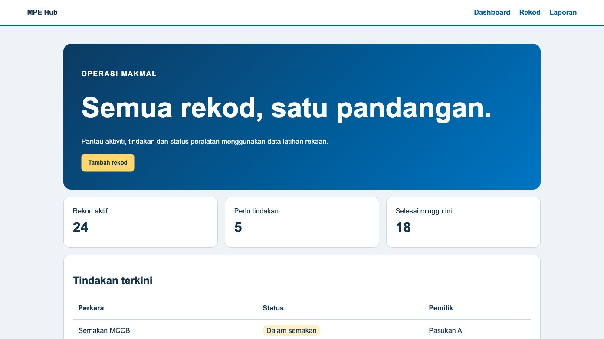
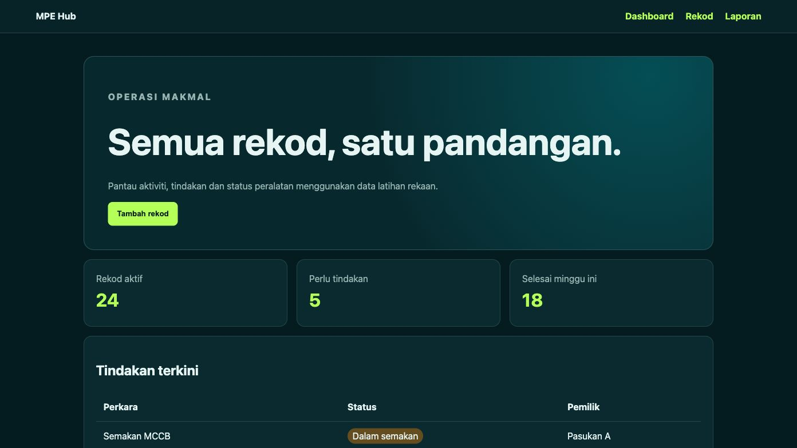
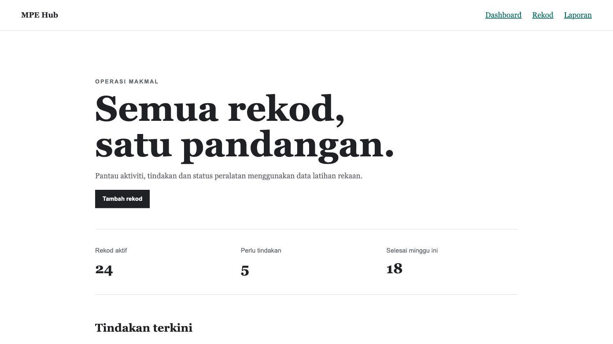
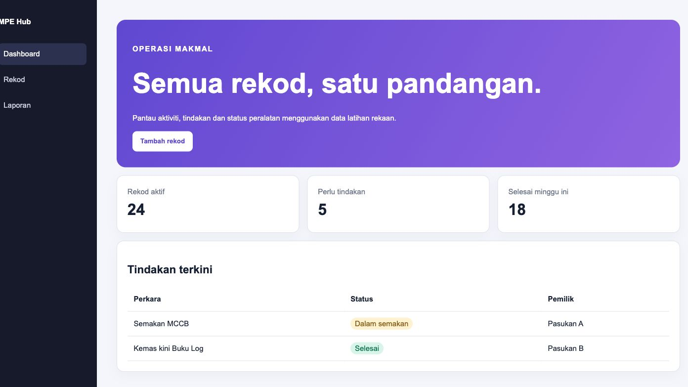

Pilih rupa, kekalkan fungsi
Setiap pasukan boleh memilih gaya yang paling sesuai dengan pengguna mereka. Semua tema dalam pek ini menggunakan struktur HTML dan nama kelas yang sama; hanya fail CSS ditukar. Kandungan, pautan dan fungsi aplikasi tidak perlu dibina semula.


Makmal Gelap
Kontras tinggi dan bersifat teknikal untuk paparan makmal atau bilik kawalan.
Muat turun CSS
Minimal
Ringan, mudah dibaca dan sesuai untuk peserta yang mahu asas paling mudah diubah.
Muat turun CSS
Dashboard Operasi
Menonjolkan metrik, status, tugasan dan tindakan susulan pada satu skrin.
Muat turun CSSTermasuk empat tema CSS, halaman contoh dan panduan penggunaan.
Cara menggunakan tema
- Muat turun dan ekstrak pek ZIP.
- Buka
contoh.htmluntuk melihat susun atur asas. - Salin tema pilihan ke dalam folder projek.
- Tukar nilai
hrefpada pautan stylesheet:
<link rel="stylesheet" href="tema-korporat.css">
Contohnya, untuk menggunakan tema dashboard:
<link rel="stylesheet" href="tema-dashboard.css">
Tema ialah titik permulaan. Peserta masih perlu menguji teks, kontras, navigasi papan kekunci dan paparan telefon sebelum menerbitkan laman.
Sumber template tambahan
- Bootstrap Examples — komponen dan susun atur responsif; kod berlesen MIT.
- Pico CSS Examples — pilihan minimal dengan HTML yang ringkas; kod berlesen MIT.
- HTML5 UP — template lengkap dan responsif; atribusi Creative Commons perlu dikekalkan.
- Start Bootstrap — koleksi template berasaskan Bootstrap; semak lesen pada setiap template.
Semakan sebelum memilih
- Sesuai dengan tujuan dan pengguna portal.
- Teks mudah dibaca dan kontras warna mencukupi.
- Paparan responsif pada desktop dan telefon.
- Butang serta pautan mudah dikenal pasti.
- Lesen dan atribusi sumber dipatuhi.